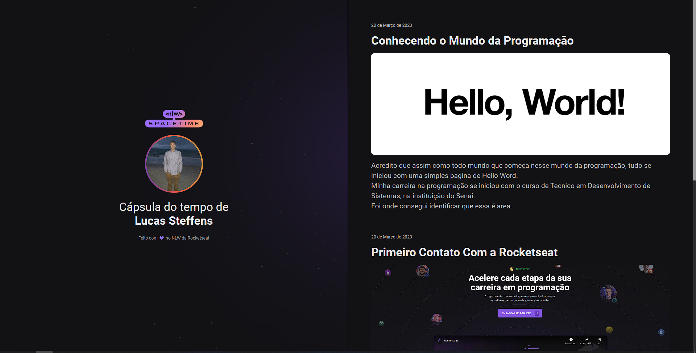

20 de Março de 2023
Primeira NLW

E aqui estou, finalizando meu primeiro NLW, onde tive a oportunidade
de criar um baita projeto e ao mesmo tempo simples, somente com HTML e
CSS.
Coloquei novamente em prática tudo que já aprendi nessa jornada de
Programação.
Tenho muito a agradecer ao Mayk, Rodrigo e a equipe Rocketseat, que
foram ótimos instrutores dessa jornada.
Que venham as próximas!